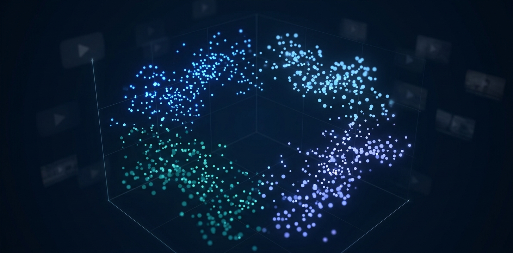

KNIME · ClusteringK=4YouTube Trending Videos Clustering
Grouped 16,200 trending YouTube videos from Brazil into four clusters using K-means on views, likes, dislikes and comments. Built the workflow in KNIME with min-max normalisation and scatter plots coloured by cluster. Group project.
KNIMEK-meansNormalisation